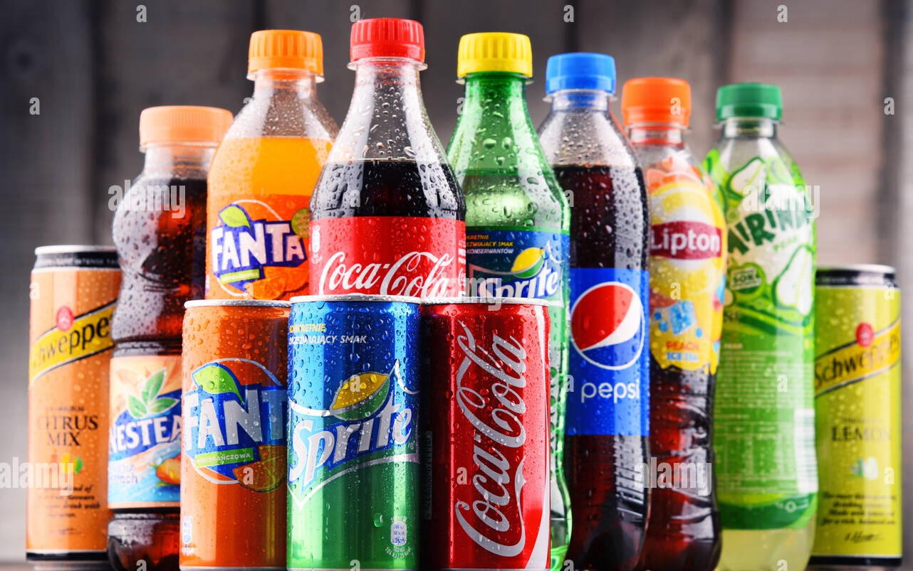
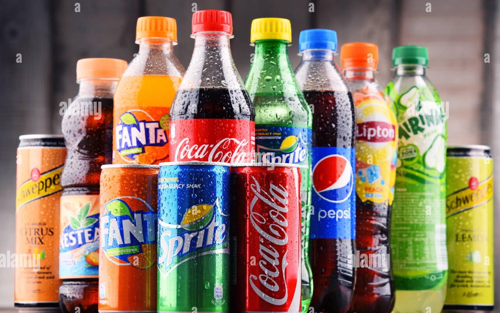

This analysis was done to assist management of Cafe Harmony identify performance of various locations.
It enabled key decisions to be made on increasing stock on items of high demand by customer.
Develop marketing strategies to improve sales during period of low sales and maximize sales during peak period to increase sales and revenue.
This report and recommendations improved revenue and profit by 20%.
 

Pure Sip's analysis was done to assist management identify areas of key improvement, fast selling drinks, current, potential and target customers.
Management was able to identify stores with more sales and profit, and develop support for stores with low sales and revenue. Sales and revenue was improved by 17%

This analysis was done to assist management of Aurora Threads Boutique make key decisions to improve performance, increase revenue and sales.
The management was able to identify fast selling items and period of peak sales, they maximized the peak period and improved sales stragey for low sales period.
As a result of this analysis the business saw increaased profit of 15%.
This analysis and report was done using Power BI. It is the report for NovaMed solutions, a pharmacy which desired to improve it's customers data and stock.
With this report, management improved decision making about drugs to stock more, the period of the year when there are more patients and when there are less.
There was revene turnover of 20% as a result of this analysis.

Deskify analysis was done using Power BI. This is stationary supplies business which the management wanted to improve the business and serve its customer better hence the analysis. Management was able to identify items of high demand,
locations and states with highest sales and those that require additional support. They were able to make key decisions which improved performance and increased profit by 15%

This analysis was done using Excel. The purpose of this analysis is the provide management with information to make key business decision based on the accessoriees in high demand, locations with high sales and profit and how to support low perfoming locations.
Incentives to encourage high performing locations and staff. The company recorded 15% turnaround in profit after this report.

This is the anaysis done for Dreamy Bites using Power BI. This anaysis was carried out to assist the management of dreamy bites to improve performance, and ways to serve their customers better.
At the end of the anaysis, they were able to identify ways to serve their customers better, from the recommendations we gave them, they improved the stock level of high demand products and what kind of customers to drive marketing campaigns for,
that will increase sales revenue. The business increased profit by 15% after this analysis